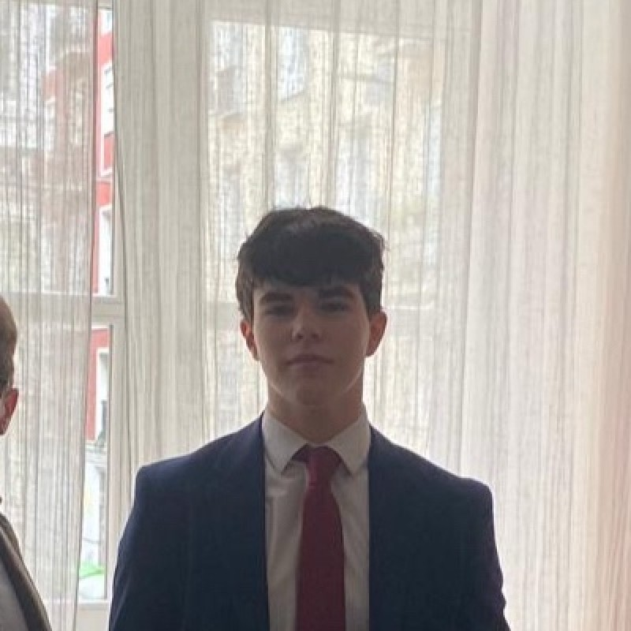

Pablo Toca Gutiérrez
Estudio Ingeniería Biomédica en la Universidad de Deusto y trabajo como becario en su laboratorio de biotecnología.
Sobre mí
Me considero una persona polivalente, apasionada por los retos y motivada por explorar nuevas posibilidades dentro de la ingeniería biomédica. Me entusiasma combinar conocimientos de distintas disciplinas para desarrollar soluciones innovadoras que conecten tecnología y salud, con la ambición de superar los límites actuales y descubrir nuevas formas de mejorar la vida de las personas. Estoy en el grado de Ingeniería Biomédica desde 2024 y desde septiembre de 2025 colaboro en el laboratorio de biotecnología de mi universidad.
Antes de la universidad gané la liga preuniversitaria de debate, algo que me enseñó a estructurar ideas y defenderlas con claridad. Hablo español e inglés con nivel profesional.
Fuera del ámbito académico, me gusta dedicar tiempo a desarrollar mi identidad personal a través de diferentes aficiones. Disfruto de la música, especialmente tocando la guitarra, y del deporte, donde el jiu-jitsu brasileño me aporta disciplina, constancia y capacidad de superación. También me apasiona explorar proyectos personales, experimentar con nuevas ideas y desarrollar pequeños proyectos por pura curiosidad e iniciativa propia.
Experiencia
-
Becario en el laboratorio de biotecnología
Universidad de Deusto
-
Atención VIP en eventos
Mouro Producciones, Santander
Preparación y servicio de comida en la zona VIP de eventos como el Hoky Music y el concierto de Dani Martín, además de mantener el espacio ordenado. En la última jornada pasé a la barra central. Una experiencia de mucha afluencia que reforzó mi trabajo en equipo y mi capacidad de adaptación.
Formación
- Grado en Ingeniería Biomédica
- Universidad de Deusto · desde septiembre de 2024
- Bachillerato científico
- CE Castroverde · hasta julio de 2024
- Sexto de primaria
- Brockhurst and Marlston House School · 2017–2018
Contacto
Estoy en Bilbao y abierto a prácticas, colaboraciones y proyectos.